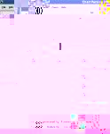
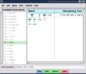
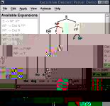
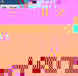

| Natural Language Toolkit | |||||
|---|---|---|---|---|---|
| Home | Installation | Documentation | Teaching | Contributing |
|
OverviewNLTK, the Natural Language Toolkit, is a suite of Python libraries and programs for symbolic and statistical natural language processing. NLTK includes graphical demonstrations and sample data. It is accompanied by extensive documentation, including tutorials that explain the underlying concepts behind the language processing tasks supported by the toolkit. NLTK is ideally suited to students who are learning NLP (natural language processing) or conducting research in NLP or closely related areas, including empirical linguistics, cognitive science, artificial intelligence, information retrieval, and machine learning. NLTK has been used successfully as a teaching tool, as an individual study tool, and as a platform for prototyping and building research systems. NLTK is free software, released under an open source license. Join the NLTK-Announce mailing list and receive announcements about new releases. Join the NLTK-Devel mailing list if you're interested in following or contributing to new developments in the toolkit. NLTK was developed by Steven Bird, Edward Loper, and a large number of contributors. Other Free NLP Software
|
Latest NLTK Release: NLTK-Lite 0.6download | installation instructions | tutorials | API documentation News NLTK-Lite 0.6.3 released [March 2006] NLTK 1.4 no longer supported [December 2005] NLTK-Lite 0.1-0.6 released [July-November 2005] Brazilian Portuguese Translation [April 2005] |
|
 Chart Parser |
 Bottom-Up Parser |
 Top-Down Parser |
 Plotting Tool |
| Last modified: Tue Apr 18 22:09:41 EST 2006 | Steven Bird, Edward D. Loper |

{kind=link}
{kind=link}
{kind=link}
{kind=link}